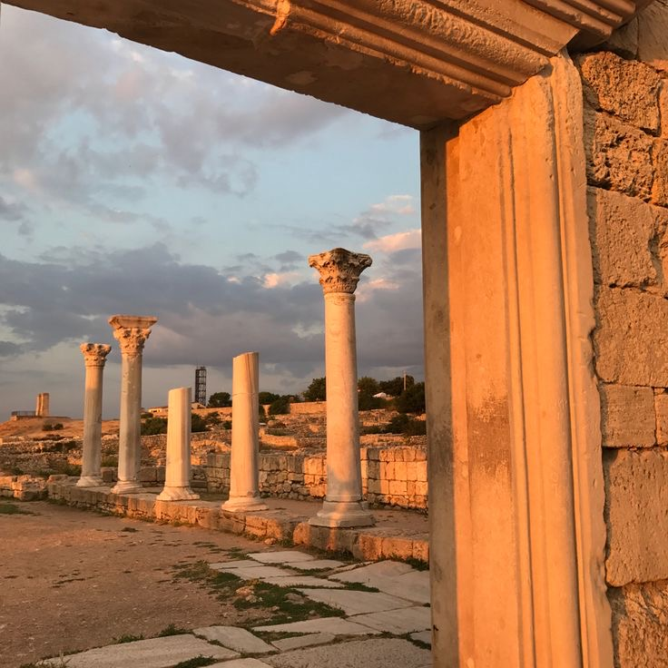
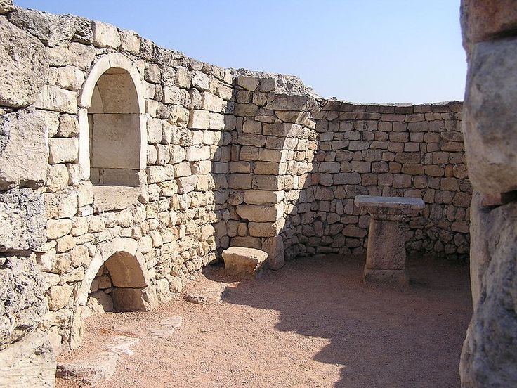

Херсонес Таврійський, розташований на території сучасного Севастополя, справедливо вважається одним із найбільших чудес України. Це місце є унікальним поєднанням природної краси, багатої історії та культурного значення. Заснований грецькими переселенцями приблизно в 422–421 роках до нашої ери, Херсонес став важливим економічним, політичним і культурним центром античного світу. Його історія — це історія змін, розвитку та духовного збагачення, яка залишила слід не лише в регіоні, а й далеко за його межами.
Однією з причин, чому Херсонес називають чудом України, є його археологічна та історична цінність. Руїни цього міста розповідають про життя стародавніх греків, римлян, візантійців і слов’ян, які тут мешкали протягом понад двох тисячоліть. Античні театри, базиліки, укріплення та житлові квартали свідчать про розвинену цивілізацію, що мала високий рівень архітектурного мистецтва, торгівлі та управління. Окремої уваги заслуговує відома «Хора» — сільськогосподарські угіддя, що оточували місто. Система поділу земель на правильні геометричні ділянки є зразком античного землевпорядкування і свідчить про високий рівень організації суспільства. У 2013 році цей пам’ятник був включений до списку Світової спадщини ЮНЕСКО, що підкреслює його унікальність та значення для світової культури.
Херсонес має також величезне духовне значення. Саме тут, згідно з літописами, князь Володимир Великий прийняв хрещення в 988 році, що стало переломним моментом у духовній історії Київської Русі. Ця подія поклала початок християнізації всього руського народу і заклала основу для розвитку культури, моралі та духовності українців. Саме тому Херсонес часто називають «колискою православ’я».
Крім історії та релігії, Херсонес вражає своєю красою. Розташований на мальовничому узбережжі Чорного моря, він зачаровує поєднанням морських пейзажів, руїн античного міста та сучасних археологічних розкопок. Це місце приваблює туристів з усього світу, які хочуть доторкнутися до історії і відчути дух античності. Херсонес також є символом багатокультурності та спадкоємності поколінь. Тут можна побачити впливи грецької, римської, візантійської та слов’янської культур. Це місце нагадує нам про те, як цивілізації взаємодіяли, збагачуючи одна одну і створюючи унікальну мозаїку культурної спадщини.
Ще однією важливою особливістю Херсонеса є збереженість його культурної спадщини. На території музею-заповідника проводяться розкопки, реставраційні роботи, а також наукові дослідження, що дозволяють розкривати нові сторінки історії. Археологи регулярно знаходять нові артефакти, які додають цінної інформації про життя людей у різні епохи.
Щоб відвідати Херсонес, потрібно відчути не лише історію, а й її зв’язок із сучасністю. Сьогодні це місце слугує платформою для освітніх і культурних заходів, які сприяють збереженню його значення для прийдешніх поколінь. Херсонес Таврійський — це не просто руїни давнього міста. Це символ багатої історії, духовності та культурного спадку, який об’єднує минуле і сьогодення. Він нагадує нам про нашу відповідальність перед історією, закликаючи берегти та примножувати культурну спадщину. Саме завдяки таким місцям ми можемо зрозуміти, наскільки глибокими є корені нашої культури та ідентичності. Цей пам’ятник є джерелом натхнення, духовності та гордості для кожного українця.